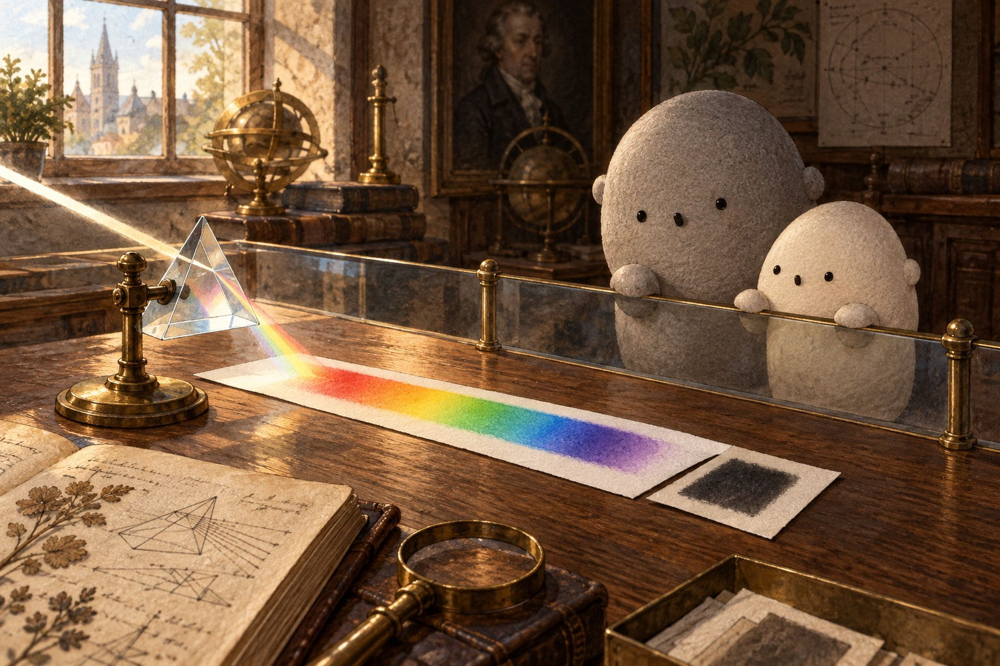
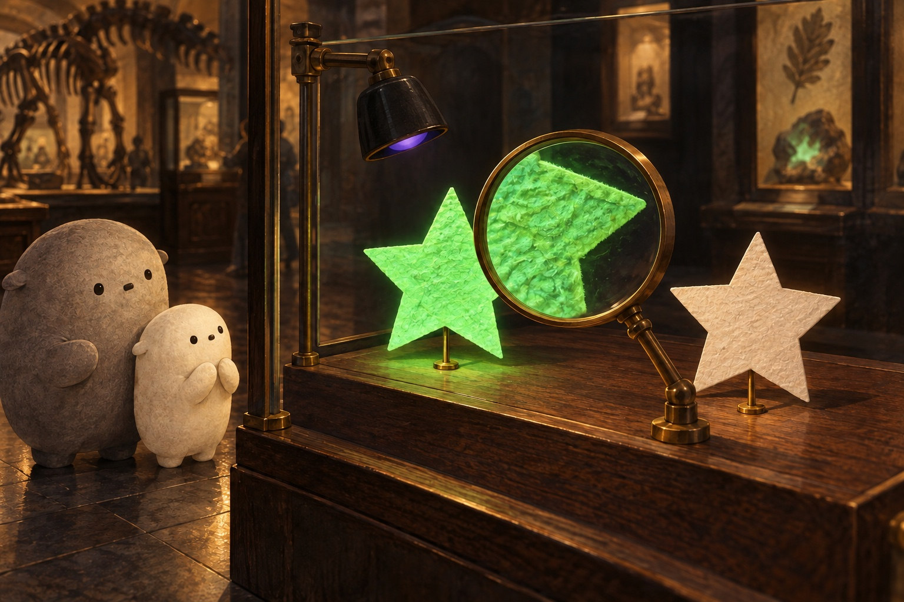
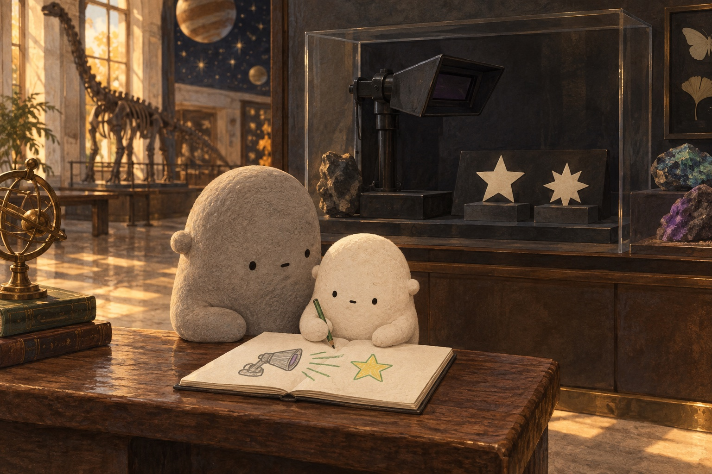

WONDER DAILY GRADE 2 · WRITING
Give the glow a path.
The light we cannot see. · Curiosity day
Name __________________________ Date _______________
Choose one scene. Say what the clue helped Little discover. Draw, label, or write one idea.



Draw a clue from your scene. Add an arrow to show where light goes or a label to name a change.
UV-A · phosphor · absorb · emit · fluorescence · visible · clue
The dark patch was a clue because … What was reaching it?
The coating takes in … What light goes in? What light comes out?
When the lamp goes off, … What happens to fluorescence?
Point to the detail your words explain. If you write a sentence, check its first capital and ending mark.